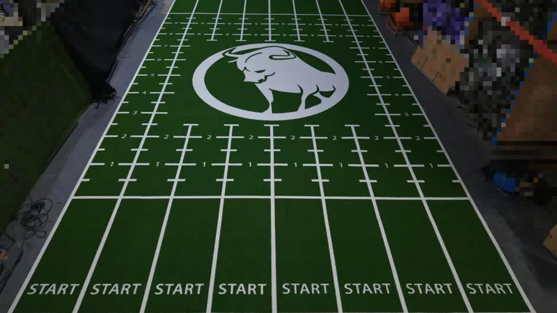
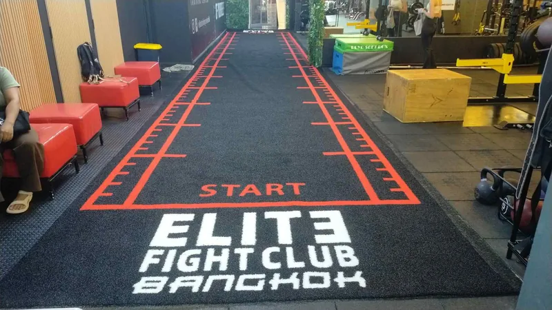
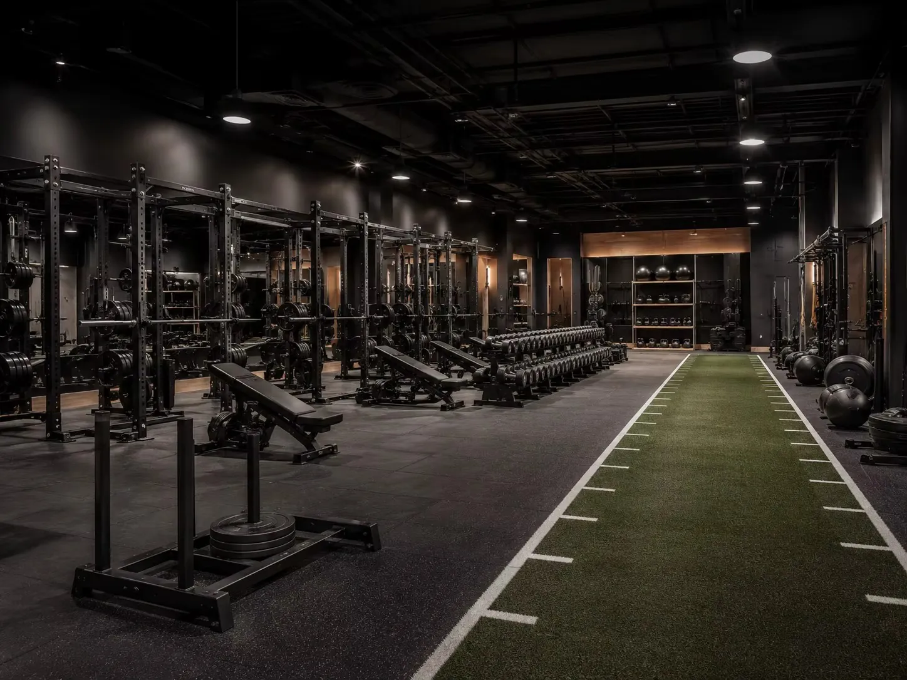
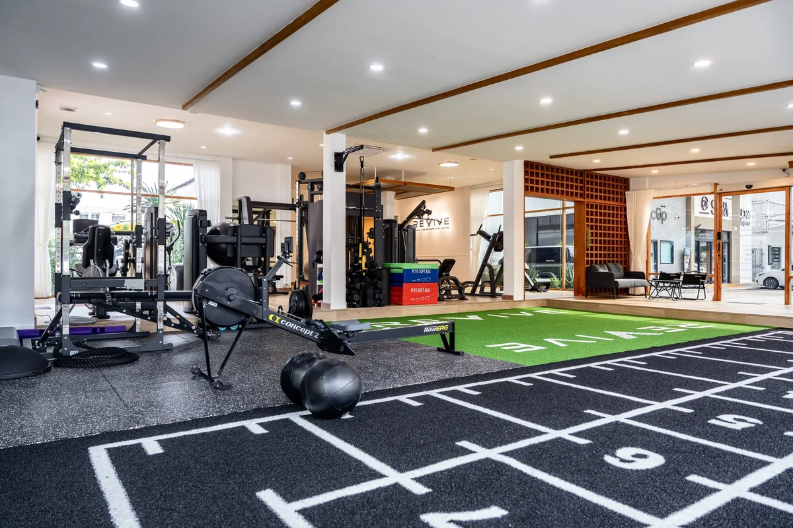

Custom Turf & BrandingCustom Gym Turf With Logo: From Design to Finished Training Zone
Turn floor dimensions, logos, colors and training marks into an approved production layout and install-ready project.
Read ArticlePractical guidance for gym turf, rubber flooring, functional equipment, facility layout and OEM sourcing—written for international B2B buyers.

Plan lane dimensions, turf specifications, subfloor preparation, seams, rubber-floor transitions, markings and equipment as one reliable training system.
Read the Full GuideFactory-informed guidance for planning surfaces, training equipment, branding and delivery before you request a project quote.

Custom Turf & BrandingTurn floor dimensions, logos, colors and training marks into an approved production layout and install-ready project.
Read Article
Turf & FlooringCompare training use, visible height, product weight, cleaning, handling and cost before choosing sled turf.
Read Article Turf & Flooring
Turf & Flooring
Dimensions, turf selection, subfloor, seams, transitions, equipment and installation details.
Read Article
Turf & Gym PlanningUse surfaces, training equipment and branding as one connected facility system.
Read Article
Turf & FlooringZone-by-zone comparison for sleds, free weights, machines and turf-to-rubber transitions.
Read ArticleSend your space, product interest and destination. We usually reply within 5 minutes during working hours.